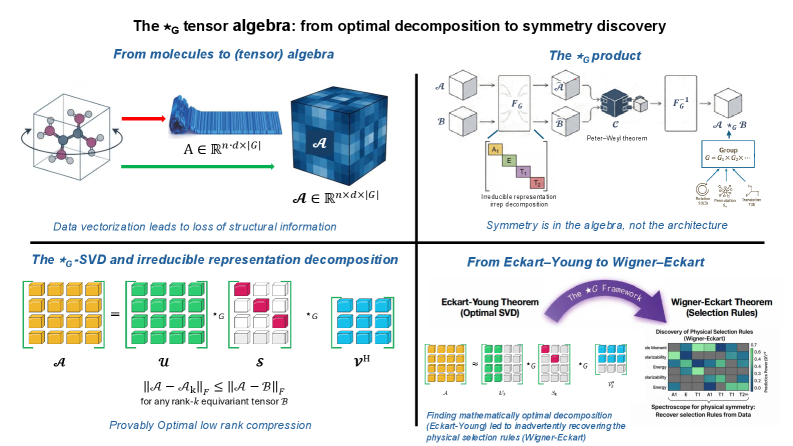
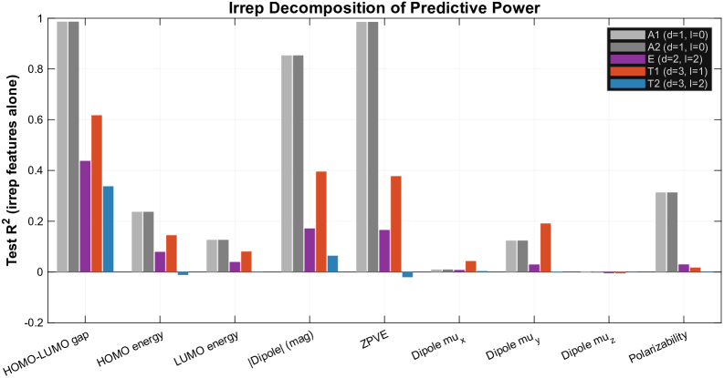

Includes a 600-line Lean 4 formalization of the star-G tensor algebra underpinning equivariant learning.
Abstract
We introduce the $\star_G$ tensor algebra, in which any finite group $G$ defines the multiplication rule, making equivariance an intrinsic algebraic property rather than an architectural constraint. The framework rests on three machine-verified theoretical pillars: (i)~an Eckart-Young optimality guarantee for the $\star_G$-SVD: the first such result for symmetry-preserving tensor approximation, exact and polynomial-time; (ii)~a Kronecker factorization that composes multiple symmetries by replacing $F_G$ with $F_{G_1} \otimes F_{G_2}$ with no architectural redesign; and (iii)~a 600-line Lean~4 formalization of the $\star_G$ algebra. The framework provides capabilities that equivariant neural networks (ENNs) structurally cannot: a closed-form per-irreducible-representation decomposition of every prediction, and data-driven discovery of the symmetry group that best fits a dataset. As a non-trivial empirical demonstration, decomposing QM9 molecular geometry over the chiral octahedral subgroup of SO(3) recovers the Wigner--Eckart selection rules of angular momentum from data alone, with no quantum mechanical input: scalar properties are A$_1$-dominated, dipole components are T$_1$-dominated, the isotropic polarizability is uniquely insensitive to $l\!=\!1$ as the rank-2-trace decomposition $l\!=\!0 \oplus l\!=\!2$ requires, and the T$_1$/A$_1$ predictive-power ratio separates vector observables from scalar observables by a factor of five. On full QM9 (130{,}831 molecules), $\star_G$-SVD with ridge regression provides closed form predictions at $\sim50-90\times$ fewer parameters than parameter-matched MLPs. Algebraic equivariance thus complements architectural equivariance not as a faster-better-cheaper alternative but as a different mathematical affordance: provably-optimal symmetry-preserving compression, per-irrep interpretability, and data-driven physical discovery.
Problem
Equivariant neural networks require bespoke architecture redesigns for each new symmetry combination, lack provable optimality guarantees for symmetry-preserving approximation, and cannot provide closed-form per-irreducible-representation decompositions of predictions.
Approach
The authors introduce the star-G tensor algebra, where any finite group G defines the multiplication rule, making equivariance an intrinsic algebraic property. The framework rests on three machine-verified pillars: an Eckart-Young optimality guarantee for the star-G-SVD, a Kronecker factorization for composing multiple symmetries, and a 600-line Lean 4 formalization of the star-G algebra (zero sorry, five axioms). The star-G-SVD provides closed-form per-irrep decomposition of predictions and enables data-driven discovery of the symmetry group that best fits a dataset.

Figure 1: The \star_{G} tensor algebra: from optimal decomposition to symmetry discovery. ( Top left, From molecules to algebra ) Molecular data measured under all elements of a symmetry group G form a structured tensor \mathcal{A}\in\mathbb{R}^{n\times d\times|G|} , preserving geometric information that is destroyed by vectorization into A\in\mathbb{R}^{n\cdot d\times|G|} . ( Top right, The \star
Results
On QM9 molecular data, the star-G-SVD with ridge regression achieves competitive prediction using 50-90x fewer parameters than parameter-matched MLPs. The framework recovers Wigner-Eckart selection rules from data alone: the T1/A1 predictive-power ratio separates vector observables from scalar observables by a factor of five. On synthetic data with Z12 symmetry, star-G-SVD achieves R^2=1.000 with exact rotational invariance at floating-point noise levels.

Figure 9: Empirical recovery of Wigner–Eckart selection rules. Per-irrep predictive power (R 2 ) for each quantum property. Scalar properties (blue shades) are dominated by A 1 ( l\!=\!0 ). Dipole magnitude (orange) also lives primarily in A 1 because |\boldsymbol{\mu}| is a scalar. Dipole vector components (red shades) show a qualitatively different pattern: A 1 gives nearly zero while T 1 ( l\!=